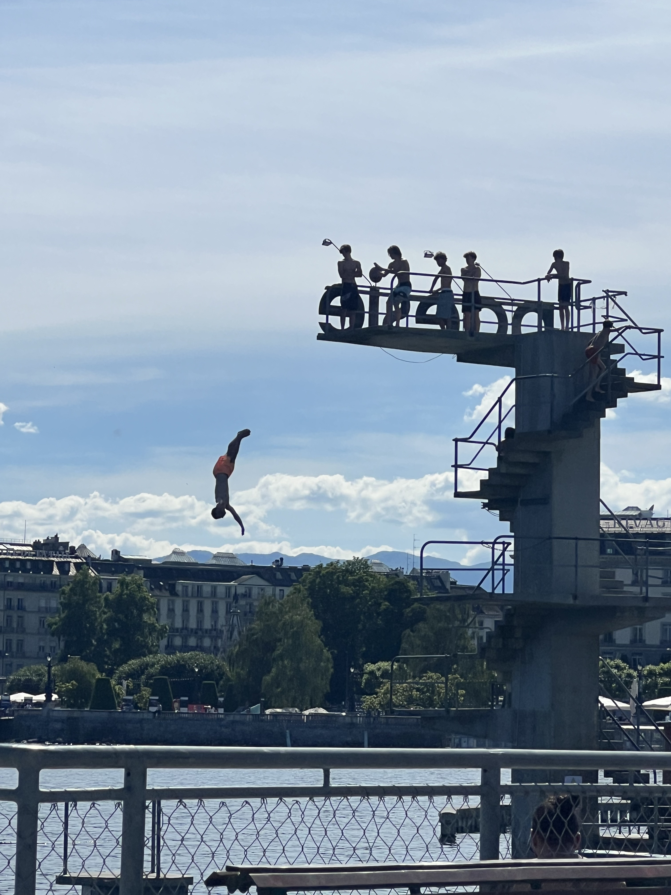
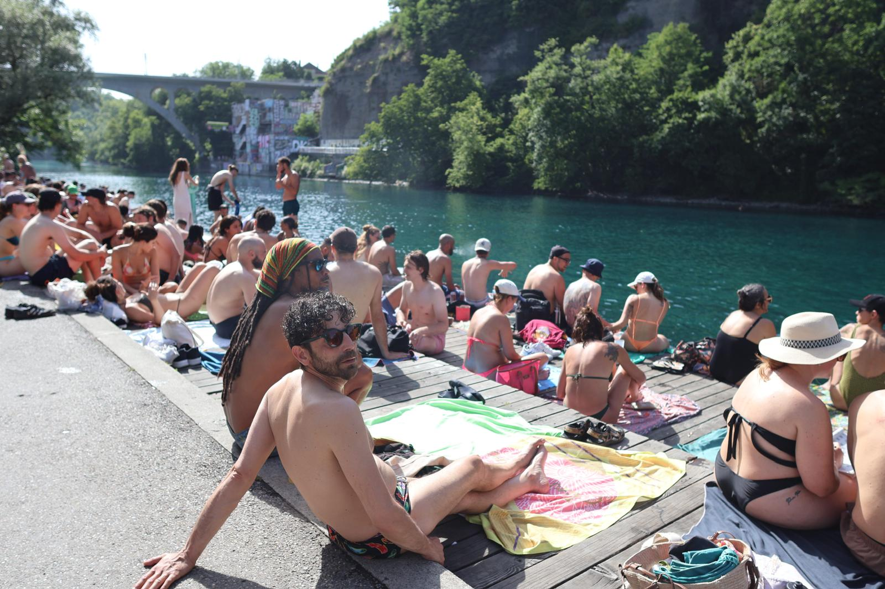
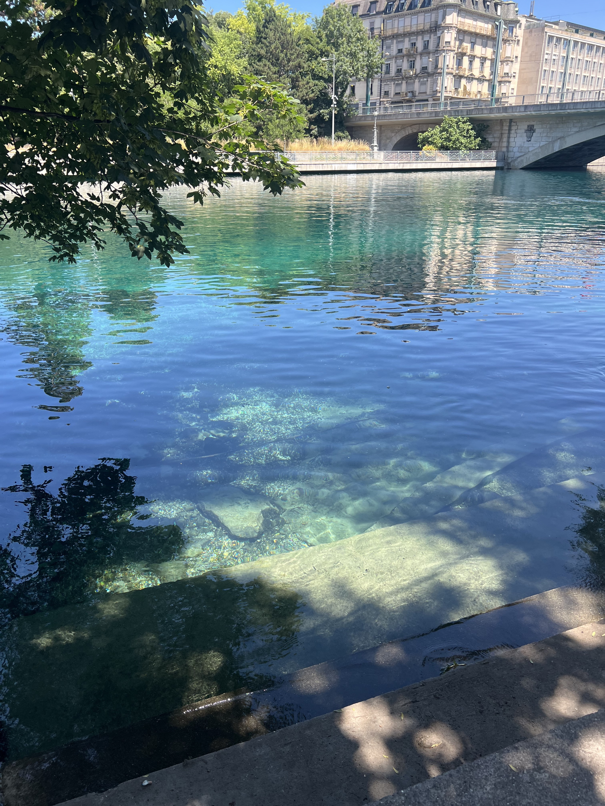
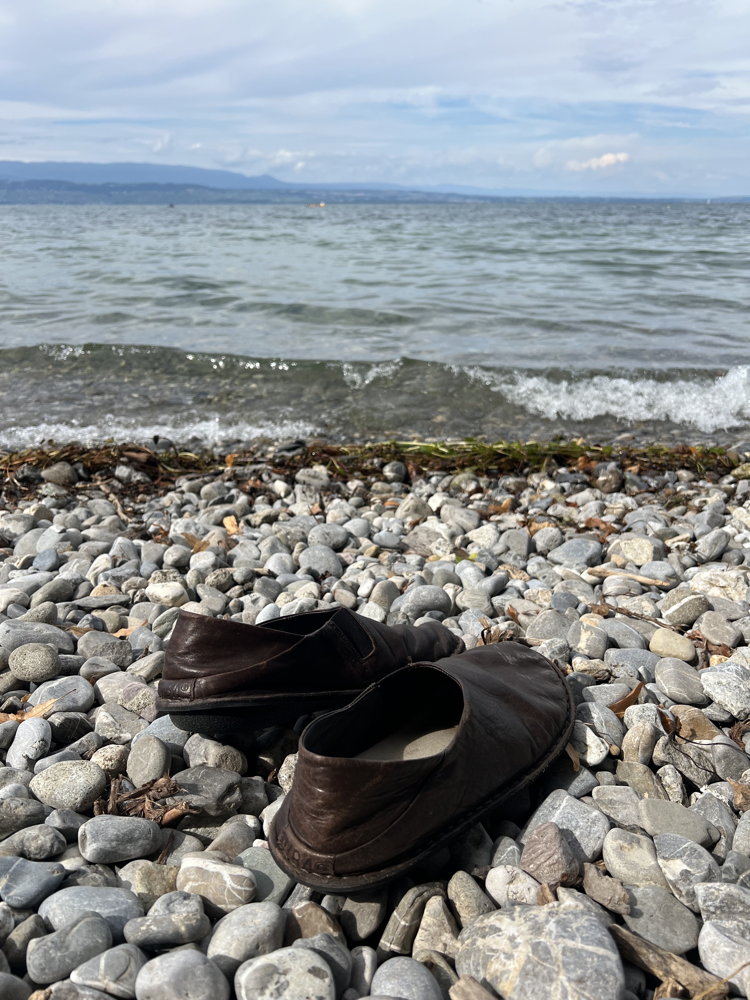
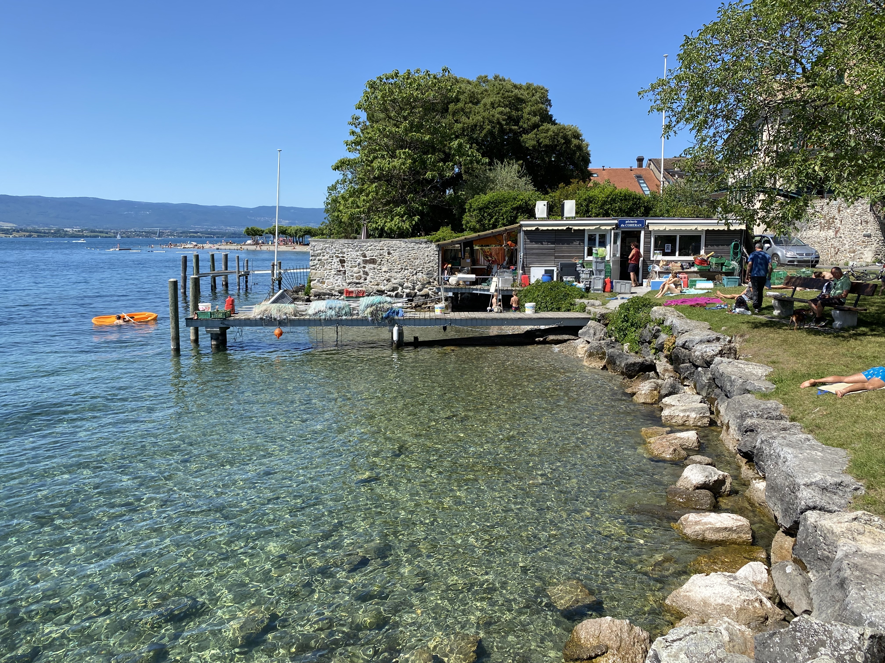

01 · The Classic
Bains des Pâquis
CHF 2.50 to get in. The most Geneva thing there is.
Quai du Mont-Blanc 30 · Pâquis

The Pâquis diving board. Queue forms on hot days.
A concrete jetty extending 200 metres into the lake, a small beach, a diving board, sunbeds, a sauna open year-round, and a café. Two francs fifty to get in. There's a reason this is the first place anyone mentions when you ask about swimming in Geneva — it works. It has the energy of a city beach without being overwhelming.
Best times: 7am on a weekday (empty, lake flat, Mont Blanc visible if you're lucky) or late afternoon when the light hits the water right. Saturday in August at noon: busy but never unpleasant.
The winter move
The sauna runs all year. Going in winter — into the sauna, out into the cold lake, back into the sauna — is one of the better things you can do in Geneva on a grey February day. Bring a friend. The cold lake in February is genuinely shocking in a way you will remember.
02 · The Urban River One
La Jonction
Where the Rhône meets the Arve. A bit grungy, completely worth it.
Chemin de la Jonction · Tram 15 to Bachet-de-Pesay

Hot day at La Jonction. Half of Geneva has the same idea.
Walk along the river path from Plainpalais toward the point where the Rhône and Arve collide. As you go you'll pass a handful of entry points — stone steps, low walls, spots where people have been lowering themselves in for decades. Each is slightly different: more current, less, shallower or deeper. Take your pick, or go all the way to the end.
At the tip of the peninsula, where the two rivers actually meet, there's a small bar. Can get a little grungy — nobody's maintaining it like a proper bains — but it has energy and the teal-green Rhône water is striking, especially when you can see the colour contrast between the two rivers meeting. A very Geneva afternoon.
03 · My Favourite
La Barge
Fast current, deep water, and a bar you climb out of the river into.
Chemin de la Bâtie 3, Carouge · Tram 12 or 17 to Bout-du-Monde

The Rhône at La Barge. That water is moving.
This is my favourite place to submerge in water in all of Geneva. The Rhône here moves fast — fast enough that the water stays clear and cold even in high summer. It's deep right from the bank, so you step off the edge and go straight in over your head. No shallow shuffling required.
What makes it: there's a bar. You swim, you climb out, you finish your beer. That's the whole thing. Low-key the best swimming hole in the city, and somehow still not overrun. The current demands a bit of respect — don't go in drunk, and swim across it rather than against it — but handled sensibly it's a good swim and deeply satisfying.
04 · The France Escape
Sciez-sur-Léman
Pebble beach, clear water, France prices. Good with kids.
Sciez, Haute-Savoie, France · ~40 min by car from Geneva centre

Sciez. Leave the shoes. Go in.
Across the French border and along the lake road — a proper plage with a pebble shore, clear water, picnic spots under the trees, and the easy pace of small-town French lakeside life. Calmer than anything in Geneva, a fraction of the crowd, and France means France prices at the café.
Good with kids: the water is shallow for a long way out and the pebble beach is easy. Take a picnic, stay until it cools down, drive back.
05 · The Village One
Hermance
Medieval village, working fishing dock, 20 minutes east.
Hermance, Geneva · 20 min by car or bus 33 from Rive

Hermance. The fishing operation is still running. So is the restaurant.
Twenty minutes along the lakeside — a small medieval village with old stone lanes, a couple of restaurants on the water, and direct lake access from the rocks beside the fishing dock. One of the most intact old villages in the Geneva canton, and the fishing operation is genuinely still running, which gives the whole place a feel that most lakeside spots in Switzerland have long since lost.
Have lunch at the restaurant on the water, swim off the rocks after, take the bus home. A complete afternoon. Don't rush it.